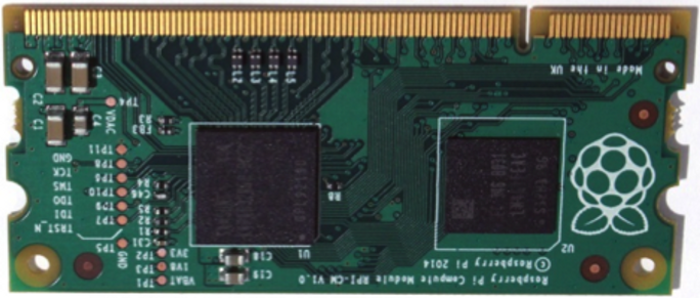

| Side | Pin number | Pin Name | Notes |
|---|---|---|---|
| - | - | - | - |

Show available GPIO
Available GPIO with special notes
All HDMI pins
The power pins
Plug your camera here...
A second camera? Here you go...
Pins related to DSI0
Pins related to DSI1
Some unconnected Pins
Some other pins...